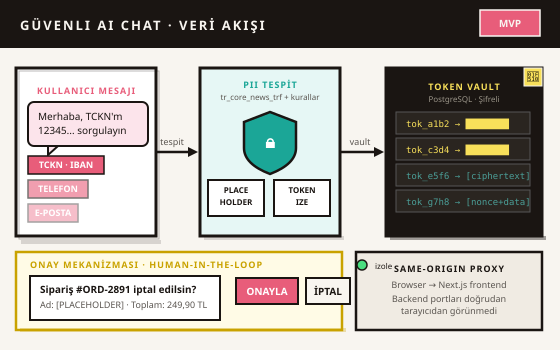

Türkçe Kişisel Verileri Modelden Önce Koruyan Bir AI Chat Nasıl Tasarlanır?
Türkçe PII tespiti, şifreli Token Vault ve insan onaylı işlemler içeren güvenli AI chat MVP vaka çalışması.

1. Problem
Bir kullanıcı AI chat uygulamasına sipariş durumunu sormak veya bir işlem gerçekleştirmek için kişisel bilgilerini yazabilir. Bu mesaj doğrudan modele veya harici bir API'ye gönderildiğinde TCKN, IBAN, telefon, adres, e-posta veya sipariş bilgileri sistem sınırlarının dışına çıkabilir.
Başlangıç sorum şuydu: Bir chat sistemi, kullanıcı deneyimini tamamen bozmadan Türkçe kişisel verileri model çağrısından önce nasıl koruyabilir ve geri döndürülemez işlemleri nasıl insan kontrolünde tutabilir?
2. Neden Yalnızca Maskeleme Yeterli Değildi?
İlk bakışta çözüm hassas verileri yıldız karakterleriyle kapatmak gibi görünüyordu. Ancak bazı kullanım senaryolarında sistemin işlem tamamlandıktan sonra gerçek değere yetkili biçimde yeniden ulaşması gerekiyordu. Bu durum, geri döndürülemez maskeleme ile güvenli ve geri döndürülebilir tokenizasyonu birbirinden ayırmayı gerektirdi.
Ayrıca kişisel verinin mesaj metninden çıkarılması tek başına yeterli değildi. Token eşleşmesinin nerede saklandığı, frontend'in bu eşleşmeye erişip erişemediği, tarayıcı storage'ında iz kalıp kalmadığı ve backend hatalarının sistem ayrıntılarını sızdırıp sızdırmadığı da kontrol edilmeliydi.
3. Ben Neyi Sorguladım?
Bir tokenizasyon endpoint'inin 200 cevabı vermesi sistemin güvenli olduğu anlamına gelmiyordu. Korunan metin doğru görünürken gerçek değer başka bir API alanında, console çıktısında, storage kaydında veya network cevabında sızabilirdi.
Bu nedenle sistemi yalnızca fonksiyonel çıktılar üzerinden değil, verinin geçtiği bütün sınırlar üzerinden test ettim. Görünür DOM, frontend cevapları, console, local storage, session storage, IndexedDB ve browser network trafiğini ayrı ayrı inceledim.
4. Türkçe PII Tespiti
Türkçe kişisel verileri tespit etmek için tr_core_news_trf modeli ile özel yapısal kuralları birlikte kullandım. Ad ve adres gibi bağlamsal varlıklarda dil modeli yardımcı olurken TCKN, IBAN ve telefon gibi belirli biçime sahip alanlarda kural tabanlı kontroller kullandım.
Bu hibrit yaklaşımın amacı tek bir tespit yöntemine bağımlı kalmamak ve farklı kişisel veri türlerini aynı koruma akışında ele almaktı. Sistemin kapsamlı precision/recall ölçümü henüz yayımlanmıyor; sonuçlar sentetik test verisiyle doğrulandı.
5. İki Koruma Modu
Gerçek değerin daha sonra geri yüklenmesi gerekmeyen senaryolarda kişisel veri anlamlı bir placeholder ile değiştirilir. Aşağıdaki servisler mesajın işlevsel bağlamını korurken gerçek değeri görmez.
Gerçek değere daha sonra yetkili biçimde ihtiyaç duyulan senaryolarda kişisel veri benzersiz bir token ile değiştirilir. Token ile gerçek değer arasındaki eşleşme frontend'de veya açık metin olarak tutulmaz.
6. Şifreli Token Vault
Geri döndürülebilir token eşleşmelerini PostgreSQL üzerinde şifreli bir Vault içinde tuttum. Master key Git dışında bırakılan .env dosyasında yapılandırıldı; Base64 çözümü ve 32 byte uzunluğu doğrulandı.
Test sırasında Vault içindeki hassas kayıtları görüntülemek yerine yalnızca kayıt sayısını kontrol ettim. Başlangıçta dört olan şifreli kayıt sayısının testler sonunda dokuza çıkması, tokenlaştırma senaryolarının Vault kaydı oluşturduğunu doğruladı.
Gerçek anahtar veya token değerleri bu belgede yer almaz.
7. Same-Origin Veri Akışı
Tarayıcının backend ve PII servislerine doğrudan bağlanmasını istemedim. İstekleri Next.js frontend üzerinden same-origin proxy ile yönlendirdim. Browser network testinde yalnızca frontend origin'ine bağlantı görüldü; backend, PII servis portları veya harici servislerle doğrudan browser iletişimi görülmedi.
Mimari: Tarayıcı → Next.js (same-origin) → PII Servisi / Backend API / PostgreSQL. Tarayıcı yalnızca frontend origin'ini görür.
8. Yüksek Riskli İşlemlerde İnsan Onayı
Sipariş iptali ve e-posta gönderim simülasyonu gibi dış dünyada sonuç oluşturan işlemleri tek mesajla çalıştırılabilir bırakmadım.
Sistem önce işlem planı oluşturuyor, kullanıcıya onay kartı gösteriyor ve ikinci açık onayı bekliyor. Sipariş iptali testinde confirmation body yalnızca plan_id ve confirm: true içerdi. İşlem CANCELLED sonucuyla tamamlandıktan sonra kart yeniden kullanılamayan read-only makbuza dönüştü.
E-posta senaryosunda gerçek gönderim yapılmadı. Onay sonrasında QUEUED_SIMULATION sonucu ve sentetik MSG-TEST-* kimliği üretildi; gerçek e-posta adresi görünür hale gelmedi.
9. Güvenli Hata Yönetimi
Bir backend hatasının kullanıcıya ham exception, stack trace, servis adresi veya hassas sistem bilgisi göstermemesi gerekiyordu. Güvenli hata görünümünü bu sınırlar üzerinden test ettim. Hata senaryosunda raw exception, stack trace ve backend URL gösterilmedi.
10. Uçtan Uca Doğrulama
Test edilen yerel senaryolarda ve incelenen browser yüzeylerinde hassas veri sızıntısı görülmedi. Aşağıdaki tablo doğrulanan kontrolleri özetler.
| Kontrol | Sonuç |
|---|---|
| Backend health | 200 |
| Backend readiness | 200 |
| PII servisi | Healthy |
| PostgreSQL | Healthy |
| Frontend | 200 |
| Tokenize endpoint | 200 |
| TOKENIZED chat | Başarılı |
| Sipariş durumu | SHIPPED |
| Sipariş iptali | CANCELLED |
| E-posta işlemi | QUEUED_SIMULATION |
| Uygulama console exception | 0 |
| Hassas veri sızıntısı (DOM, API, console, storage, network) | Test edilen yüzeylerde görülmedi |
| Harici browser isteği | Görülmedi |
| Mobil yatay taşma | Görülmedi |
11. Responsive Doğrulama
Arayüzü 1440×1000, 1024×900, 768×1024 ve 390×844 çözünürlüklerinde test ettim. Bu dört görünümde yatay overflow oluşmadı.
12. Sonuç
Ortaya çıkan sistem, Türkçe kişisel verileri model veya dış servis katmanına ulaşmadan tespit eden, kullanım senaryosuna göre placeholder veya şifreli token ile koruyan ve yüksek riskli işlemleri ikinci kullanıcı onayına bağlayan yerel bir MVP oldu.
Projenin başarısını yalnızca çalışan arayüz veya başarılı API cevaplarıyla değerlendirmedim. Hassas token, protected_text, ciphertext, nonce ve token eşleşmelerinin DOM, frontend cevapları, console, storage ve browser network katmanlarında görünmediğini ayrı ayrı kontrol ettim.
13. Sınırlamalar
- Gerçek kullanıcı girişi ve roller henüz yok; sonraki fazda planlandı
- Ayrıntılı audit kayıtları sonraki fazda gelecek
- Gerçek ERP entegrasyonu bulunmuyor; sipariş verileri sentetik
- Gerçek e-posta servisi bağlı değil; gönderim tamamen simülasyon
- Gerçek LLM bağlı değil; model katmanı stub ile temsil edildi
- Production deployment yapılmadı; yerel ortamda çalıştırıldı
- Sentetik test verileri kullanıldı; gerçek kullanıcı verisi test edilmedi
- PII tespitinin kapsamlı precision/recall ölçümü henüz paylaşılmıyor
- Production secret rotation ve anahtar yönetimi tamamlanmadı
- Sistem için tam KVKK uyumluluğu iddia edilmiyor
14. Öğrendiklerim
Bu proje bana PII korumasının yalnızca bir regex veya NER modeli eklemekten ibaret olmadığını gösterdi. Veriyi tespit etmek kadar token eşleşmesinin nerede saklandığı, hangi servisin ham veriye erişebildiği ve tarayıcı katmanında iz kalıp kalmadığı da güvenlik mimarisinin parçasıydı.
Bir endpoint'in başarılı cevap vermesi de tek başına yeterli değildi. Güvenlik varsayımlarını doğrulamak için DOM, API cevapları, console, storage ve network katmanlarını ayrı ayrı test etmek gerektiğini gördüm.
15. Sonraki Faz
- Kullanıcı girişi ve oturum yönetimi
- Rol tabanlı erişim kontrolü
- Ayrıntılı audit kayıtları
- Gerçek ERP entegrasyonu
- Gerçek e-posta servis entegrasyonu
- Gerçek LLM bağlantısı
- RAG ve embedding güvenliği
- Saklama ve silme politikaları
- Production anahtar yönetimi ve secret rotation
- Production deployment